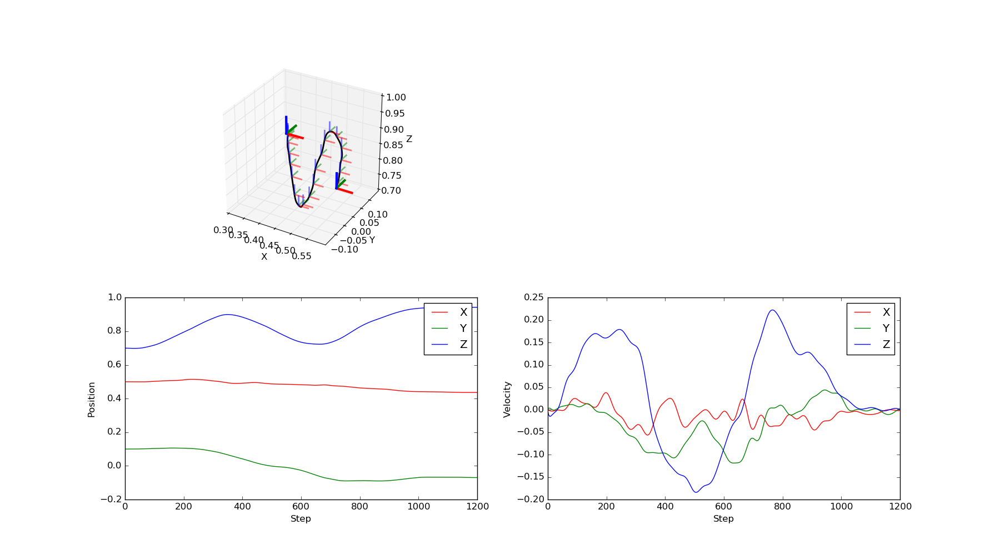

In a Cartesian Space DMP, the rotation are represented by quaternions. A normal DMP cannot be used in this case because it requires that each component can be linearly interpolated on its own, which is not the case for three-dimensional orientations.
The following plot shows the trajectory generated by an imitated Cartesian Space DMP, start and goal positions, and orientations. Note that executing such a DMP on a robot requires an inverse kinematic that computes the required joint angles to reach the given poses. It is not guaranteed that a smooth trajectory in Cartesian space will result in a smooth trajectory in joint space.
print(__doc__)
import os
import numpy as np
import matplotlib.pyplot as plt
from mpl_toolkits.mplot3d import Axes3D
from bolero.representation import CartesianDMPBehavior
def matrix_from_quaternion(q):
w, x, y, z = q
x2 = 2.0 * x * x
y2 = 2.0 * y * y
z2 = 2.0 * z * z
xy = 2.0 * x * y
xz = 2.0 * x * z
yz = 2.0 * y * z
xw = 2.0 * x * w
yw = 2.0 * y * w
zw = 2.0 * z * w
R = np.array([[1.0 - y2 - z2, xy - zw, xz + yw],
[ xy + zw, 1.0 - x2 - z2, yz - xw],
[ xz - yw, yz + xw, 1.0 - x2 - y2]])
return R
def plot_pose(ax, x, s=1.0, **kwargs):
p = x[:3]
R = matrix_from_quaternion(x[3:])
for d, c in enumerate(["r", "g", "b"]):
ax.plot([p[0], p[0] + s * R[0, d]],
[p[1], p[1] + s * R[1, d]],
[p[2], p[2] + s * R[2, d]], color=c, **kwargs)
return ax
def plot_trajectory(ax, X, color="k"):
ax.plot(X[:, 0], X[:, 1], X[:, 2], lw=2, color=color)
for x in X[50:-50:50]:
plot_pose(ax, x, s=0.03, lw=2, alpha=0.5)
plot_pose(ax, X[0], s=0.05, lw=3)
plot_pose(ax, X[-1], s=0.05, lw=3)
try:
dirname = os.path.dirname(os.path.realpath(__file__))
except NameError:
dirname = "."
model = os.path.join(dirname, "cart_dmp_model.yaml")
config = os.path.join(dirname, "cart_dmp_config.yaml")
dmp = CartesianDMPBehavior(configuration_file=model)
dmp.init(7, 7)
dmp.load_config(config)
plt.figure(figsize=(18, 10))
ax = plt.subplot(221, projection="3d", aspect="equal")
plt.setp(ax, xlim=(0.3, 0.6), ylim=(-0.15, 0.15), zlim=(0.7, 1.0),
xlabel="X", ylabel="Y", zlabel="Z")
X = dmp.trajectory()
plot_trajectory(ax, X, "k")
ax = plt.subplot(223)
ax.plot(X[:, 0], label="X", c="r")
ax.plot(X[:, 1], label="Y", c="g")
ax.plot(X[:, 2], label="Z", c="b")
ax.legend(loc="upper right")
plt.setp(ax, xlabel="Step", ylabel="Position")
ax = plt.subplot(224)
dt = dmp.dt
ax.plot(np.diff(X[:, 0]) / dt, label="X", c="r")
ax.plot(np.diff(X[:, 1]) / dt, label="Y", c="g")
ax.plot(np.diff(X[:, 2]) / dt, label="Z", c="b")
ax.legend(loc="upper right")
plt.setp(ax, xlabel="Step", ylabel="Velocity")
plt.show()
Total running time of the script: ( 0 minutes 0.233 seconds)